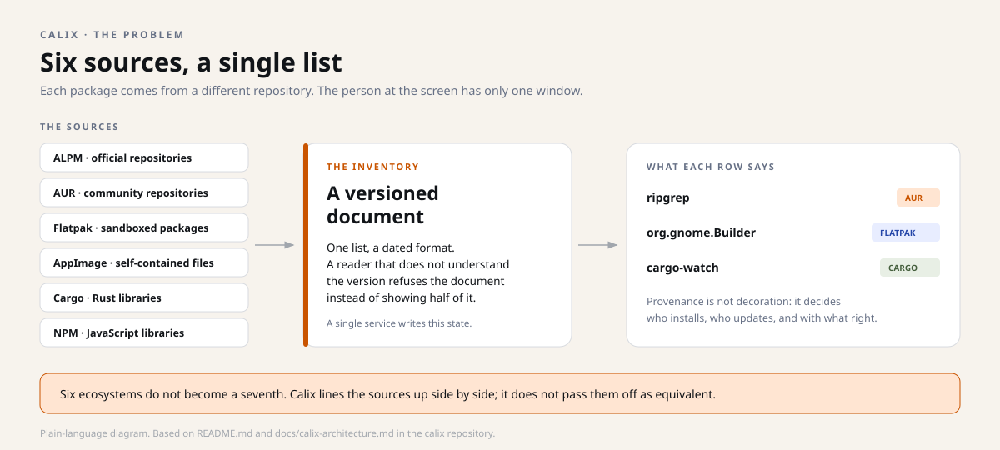
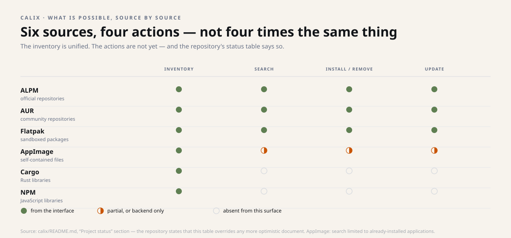
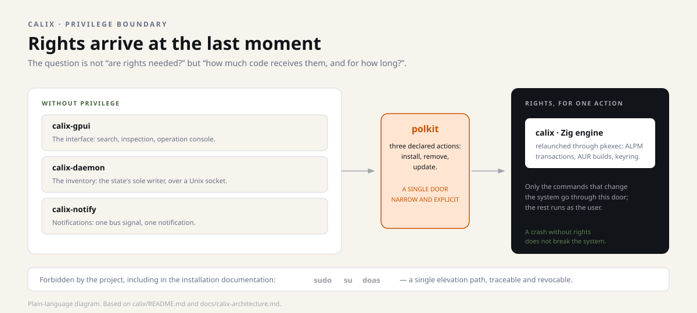
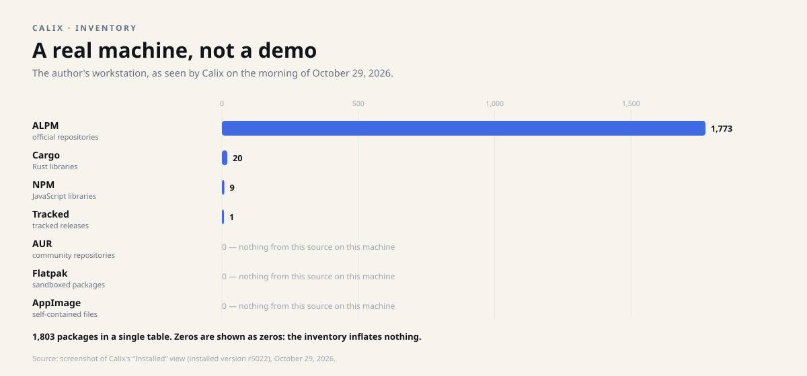
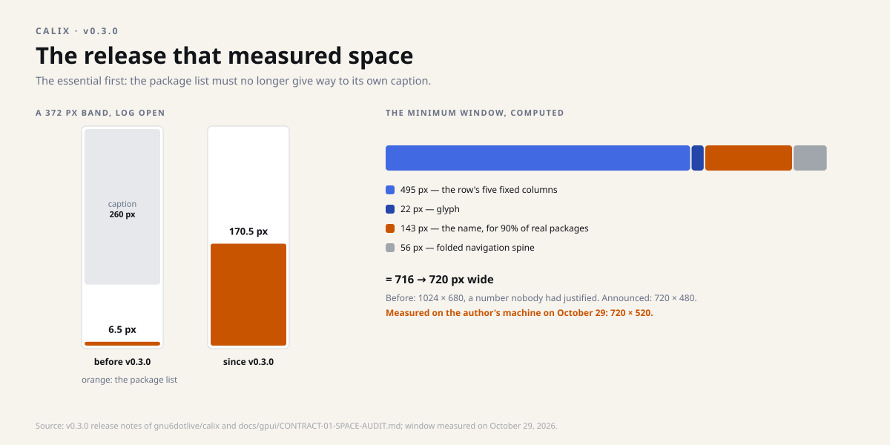
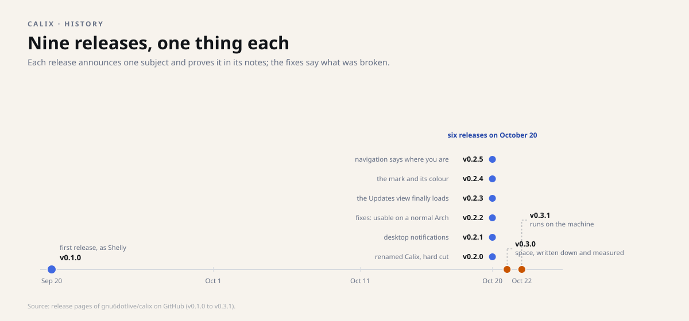
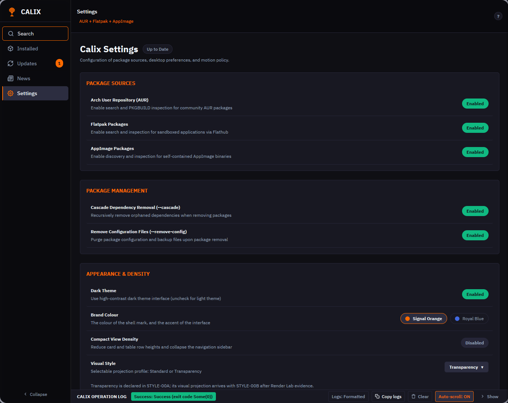
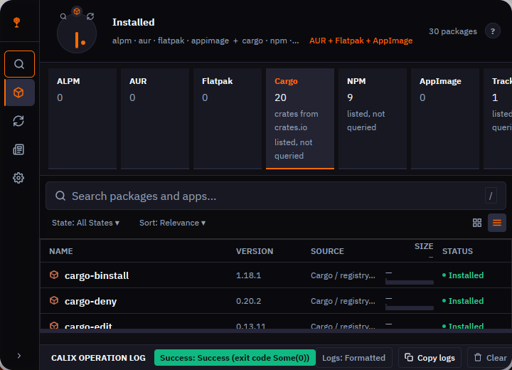

Snapshot of October 29, 2026. This dossier describes the four repositories as they stood that day; the projects have moved on since, and the repositories are the authority. Underlined links lead to the sources, frozen at their state of that day.
Dossier 3 · the companion
Calix
A single window to install, update and inventory the software of an Arch Linux system — without ever hiding where each package comes from.
Pre-1.0 v0.3.1 GPL-3.0 licence Arch Linux x86_64
sudo: elevation goes through a single polkit pathIn one picture
Imagine a single counter that accepts parcels from six different carriers. You now have one desk, one tracking number, one queue.
But every parcel keeps its original label: this one came by post, that one by private courier. The counter does not pretend all carriers are the same — it just saves you from running between six desks.
The problem, then the answer

On Arch Linux, installing software means moving from one tool to another: pacman for the official repositories, a helper for the AUR, flatpak for sandboxed packages, and "whatever is lying around" for AppImages. Each has its own output, its own idea of what is installed, and its own path to administrator rights.
Calix brings all of that into a single native application: no embedded web page, no hidden browser. The interface is written in Rust with GPUI — the same foundation as gnosix — and package management in Zig.


Two real views of Calix. The first, a search, mixes Arch repositories and the AUR: every row keeps its source, and the AUR is flagged as "build recipes, not binaries". The second shows the inventory of the author's 1,803 packages, one tab per ecosystem; Cargo and NPM are "listed, not queried". Screenshots of October 29, 2026, installed version r5022.
What works, what is still open
| Area | State published by the repository | What it does not say |
|---|---|---|
| Interface | Primary interface, in active development | Not a frozen design; the layout can still change. |
| Unified inventory | ALPM, AUR, Flatpak, AppImage, Cargo, NPM and tracked releases | Listing is not knowing how to install: see the next row. |
| Actions from the interface | ALPM, AUR and Flatpak only | Cargo and NPM are listed, not yet modifiable from the interface. |
| Search | ALPM, AUR, Flatpak and already-installed AppImages | The other sources remain inventory-only. |
| Inventory service | Answers on demand, sole writer of the state | No scheduler yet: nothing updates on its own. |
| Release tracking | Registry and provenance checks in Zig | A frozen Python engine still writes the observation file. |
| Notifications | Shipped and verified on a real session | Installed, but not enabled by default. |
| Platform | Arch Linux, x86_64 | No other distribution is supported. |

The repository publishes a status table and states that, if another document in the tree contradicts it more optimistically, this table is the one to trust. It is a rare discipline, and it is what makes the reading useful.
The privilege boundary
This is the most interesting point for anyone funding or evaluating the project. A package manager needs administrator rights: it changes the system. The question is not "are those rights needed?" but "how much code receives them?".
In Calix, the interface, the inventory service and the notification bridge run without privilege. Elevation goes through a single narrow, explicit path, via polkit. The project explicitly forbids sudo, su and doas — including in its installation documentation.

pkexec, for one of the three declared polkit actions: install, remove, update.A program that crashes without privilege does not break the system. A program that asks for rights at the last moment, for one precise operation, shrinks the surface of an incident. It is an architectural decision, not a decorative precaution.
Why provenance is the real subject
The common thread of these four repositories is topology: making explicit where each thing is, and what that position allows. Calix offers a very concrete version of it.
A package installed from the official repositories and the same name coming from the AUR are not the same object. One is signed by the distribution, the other by a community maintainer. Mixing them in an unlabelled list would be a mistake, not a simplification. So Calix keeps the label, and even versions the document format: a consumer that does not know the version refuses to read it.
A parcel label does not tell you whether the contents are good. It tells you who sent it, and therefore whom you will be dealing with if something goes wrong. That is exactly what Calix does with a package.
A real machine, not a demo
The chart comes from a screenshot of Calix on the author's workstation: 1,803 packages, almost all from the official repositories. This is what an ordinary Arch Linux system looks like, seen all at once.

History: the release that measured space
Before v0.3.0, with the log open, the package list shrank to 6.5 pixels high while its own caption kept 260. v0.3.0 wrote down who is entitled to space — and measured it: 170.5 pixels in the same band.

The same release replaced a minimum window size nobody had justified (1024 × 680) with a computed one: a row's five fixed columns, the glyph, room for the name of 90% of a real machine's packages and the folded navigation bar add up to 716 pixels, rounded to 720. The case that failed at 560 pixels is kept in the tests. Measured on the author's machine on October 29, the minimum window is 720 × 520; the release note announces 480 high.
Nine releases, one thing each

The latest, v0.3.1, is "the release that runs on the machine": the interface moves to the current generation of its graphics library — twenty-four compile errors brought down to zero, and no layout measurement moved. Where the documents and the code disagreed, the documents were corrected.


Two more views. The settings, with the brand colour to choose, orange or blue (v0.2.4); the window at its minimum size, where the navigation bar folds to make room for the list (v0.3.0). This second screenshot was taken after updates, in a state where the official inventory was not shown: it shows the layout, not the figures. Screenshots of October 29, 2026.
Projections: an even narrower door
The most telling work item concerns privilege: a dedicated root helper and finer polkit actions, so the interface asks for exactly the operation it needs — and nothing more.
The repository ranks five work items by value, with no dates:
- Finish requalifying the navigation: the clicks the synthetic pointer could not exercise, and the focus that should follow a change of place.
- Port the rest to Zig: four release-tracking commands are still in Python.
- Wire the application flow: a dedicated root helper and narrower polkit actions — the door above.
- Close the mutation gap: install and remove Cargo and NPM packages from the interface, search the sources that are inventory-only today.
- Cut the frozen Python engine, once release tracking is fully native.
What it is not
- Not finished. The project is explicitly pre-1.0; version 0.3.1 is a step, not an end point.
- Not universal. Arch Linux and x86_64 only. It is not a package manager for Debian, Fedora or macOS.
- Not automatic yet. The service answers on demand: there is no scheduler, so no background updates.
- Not everything is modifiable. Cargo and NPM appear in the inventory but cannot yet be installed from the interface.
- Not fully native. A frozen Python engine still writes the tracked-releases file; replacing it is one of the announced work items.
- Gestures not requalified. Requalifying the navigation remains open: the clicks could not be exercised by the synthetic pointer.
What it changes, depending on who you are
Arch Linux user
One window instead of four tools, and a list that does not lie to you about where a package comes from. Updates remain manual for now.
Developer
A complete example of a native GPUI interface, a Zig backend talking to libalpm, a versioned JSON-lines protocol over a Unix socket, and a polkit boundary written down in black and white.
Decision-maker or funder
The value is not "one more app store": it is a model of provenance and privilege, reusable wherever several sources must coexist without being confused.
Going further
Technical — the repository's words
ALPM: the library behind pacman, Arch's package manager. AUR: Arch's community repositories, where packages are recipes built locally. Flatpak: applications packaged with their dependencies, isolated from the system. AppImage: a self-contained executable file. polkit: the mechanism that asks the user for authorisation, at the moment of the action, for one precise operation.
Languages: Rust and GPUI for the interface; Zig 0.16 for the engine, the service and the notifications. Licence: GPL-3.0-only — a licence that requires sharing modifications if the program is distributed.
Checking for yourself
Each published release provides an archive and its SHA-256 fingerprint: download both, check the fingerprint, then look at the contents. The archive is not an installer; it is a tree to inspect.
From source, you need Zig 0.16 and a stable Rust toolchain: make zig builds the three binaries, make run starts the interface against the repository's backend. The package is installed with pkexec pacman -U, never with sudo.